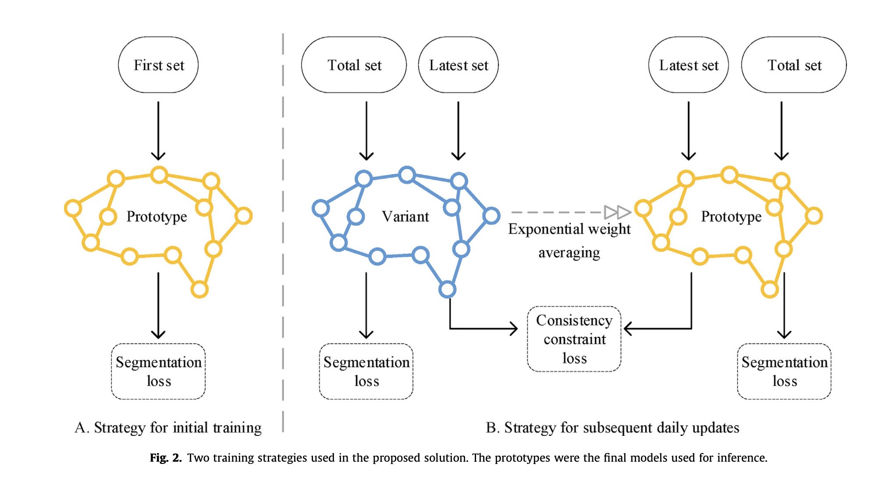
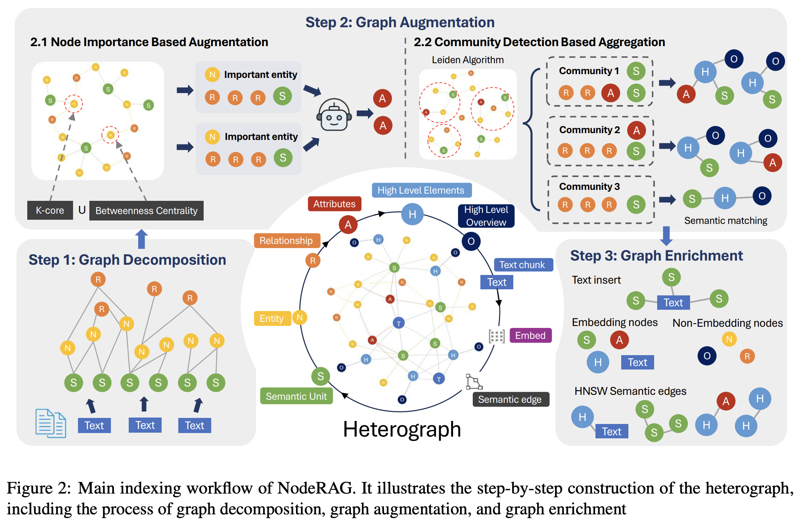

About Me
I am currently a Ph.D. student in Applied Mathematics at Columbia University. My research interests span medical image processing, numerical simulation, mathematical modelling, and deep-learning-based optimisation methods. I enjoy combining rigorous mathematical theory with modern machine-learning techniques to tackle practical problems in radiation oncology and medical imaging.
News
- 2025.05 — Co-authored “NodeRAG: Structuring Graph-based RAG with Heterogeneous Nodes” with Tianyang Xu, under review at EMNLP 2025.
- 2025.04 — Admitted as a first-year Ph.D. student under the guidance of Prof. Philip Yu at the University of Illinois at Chicago, concentrating on multimodal AI systems for medical applications.
- 2025.03 —Serving as Research Scientist at Manteia Technologies Co., Ltd. in Milwaukee, WI, I applied AI and machine-learning methods to innovate at the intersection of radiation oncology and computational intelligence, with a focus on clinical decision support.
- 2024.11 — In collaboration with Prof. Sharon Qi of University of California, Los Angeles’s Radiation Oncology Department, co-investigating state-of-the-art convolutional and transformer-based segmentation architectures to enhance model accuracy and robustness for tumor delineation in radiotherapy planning.
- 2024.08 — As the research assistant at Lamont-Doherty Earth Observatory, under Profs. Michael Tippett & Chia-Ying Lee, used PDE boundary filters, EAR5/MERRA/NeuralGCM data mining, and NLP to fine-tune TempestExtremes for global tropical cyclone and tornado forecasting.
- 2024.07 — Partnered with Prof. Haiying Shen in the Computer Science Department at the University of Virginia to optimize startup strategies and lookahead algorithms for LLMs key–value caching.
Research Interests
- Medical Image Processing
- Natural Language Processing (Large Language Models)
- Machine Learning
- Numerical Methods & Modeling
Publications

Patient-specific Daily Updated Deep-Learning Auto-Segmentation for MRI-Guided Adaptive Radiotherapy
Radiotherapy and Oncology, Dec 2022
